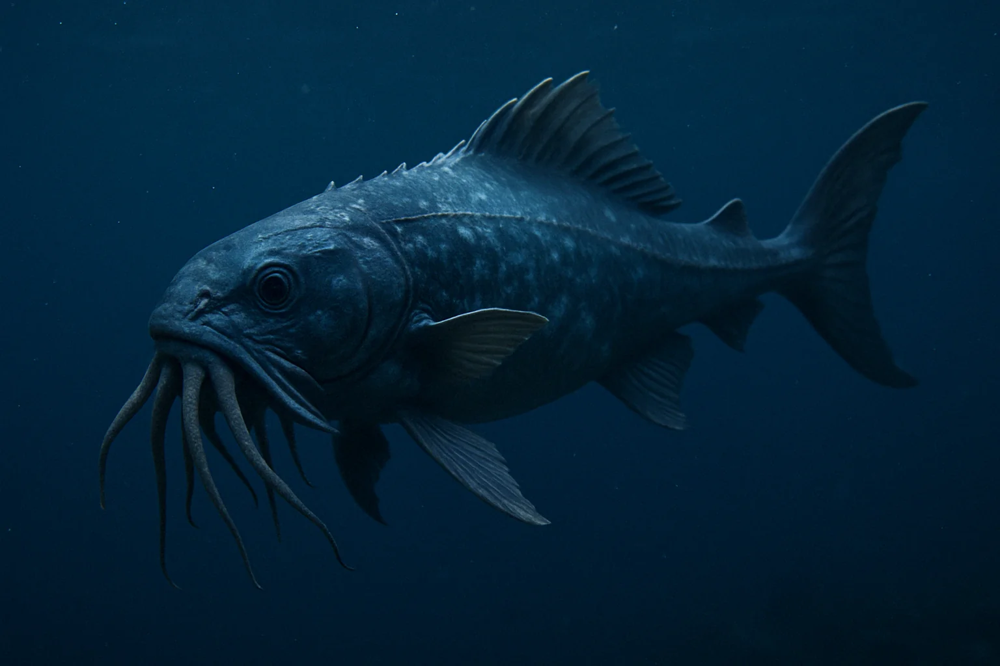
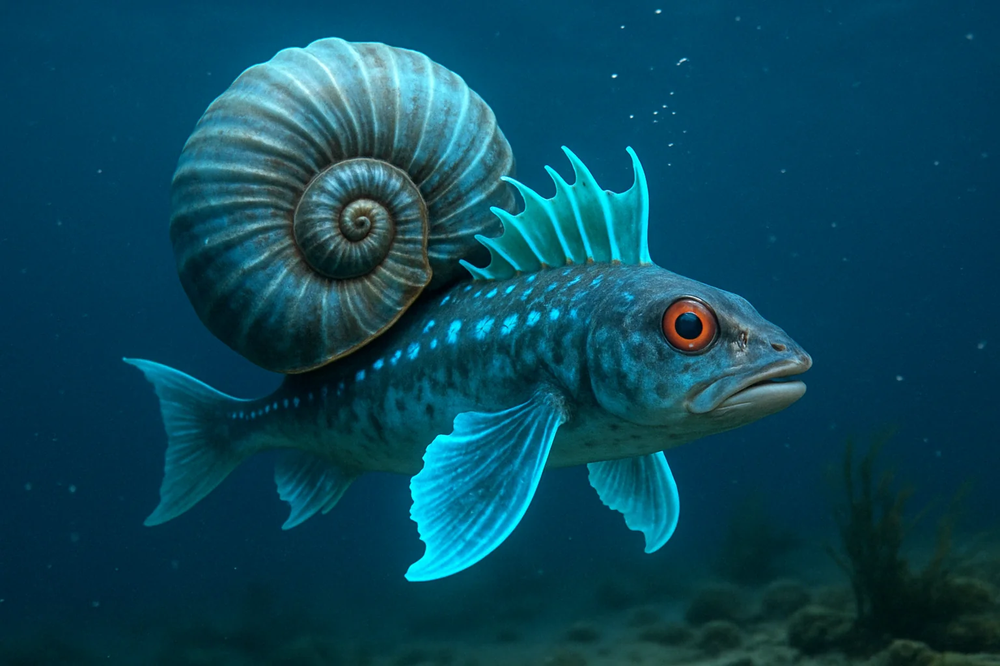
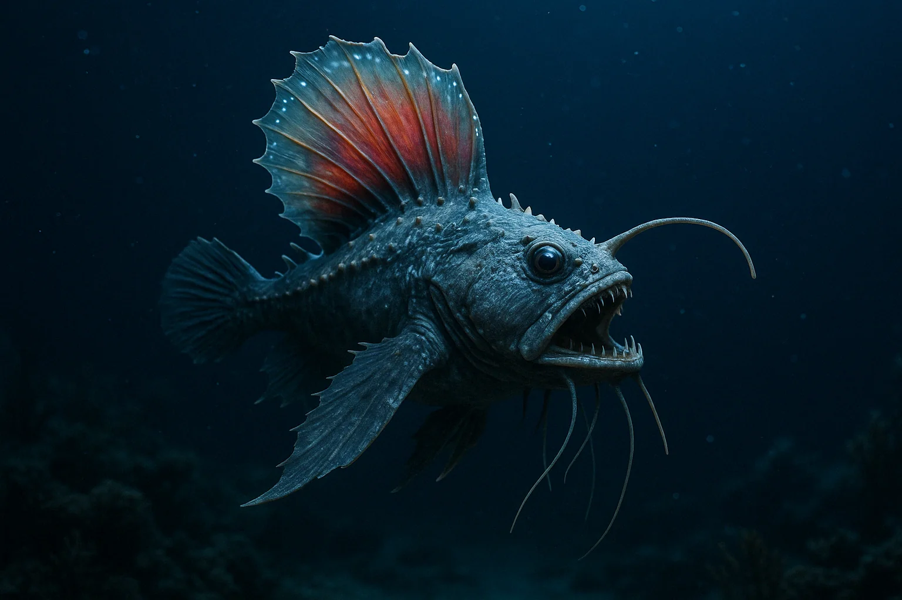

Features:
• Possesses tentacle-like appendages around its mouth for detecting and capturing prey even in near-total darkness. • Its scales emit a faint bioluminescent glow, helping to lure in unsuspecting prey. • An extremely agile predator, capable of making sudden bursts of speed to catch its target.
Interesting Fact:
The Abyssal Tentafish can change the shade of its glow to blend with surrounding seaweed, luring prey directly into its waiting tentacles!

Name: Abyssal Tentafish
Habitat Depth: 400–800 meters
Diet: Small fish, squids, crustaceans

Name: Spiralis Piscis
Habitat Depth: 600–1200 meters
Diet: Small crustaceans, plankton, larval sea creatures
Features:
• Has a protective spiral shell resembling an ancient ammonite. • Its glowing fins emit soft blue light to scare off predators.
Interesting Fact:
Spiralis Piscis can curl into a spiral and quickly roll along the seafloor to escape threats!
Features:
• Grows bright, golden glowing "petals" on its back to attract prey. • Its body is flexible and fast, allowing sharp turns in the darkness.
Interesting Fact:
When attacked, Luminocetus Radiatus flashes a blinding light and swiftly changes direction, leaving predators confused.

Name: Luminocetus Radiatus
Habitat Depth: 500–900 meters
Diet: Medium-sized fish, squids

Name: Abyssodraco Ferox
Habitat Depth: 1500–2500 meters
Diet: Omnivorous — eats anything it can catch: fish, shrimp, small squids